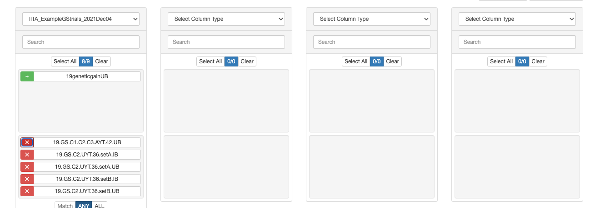
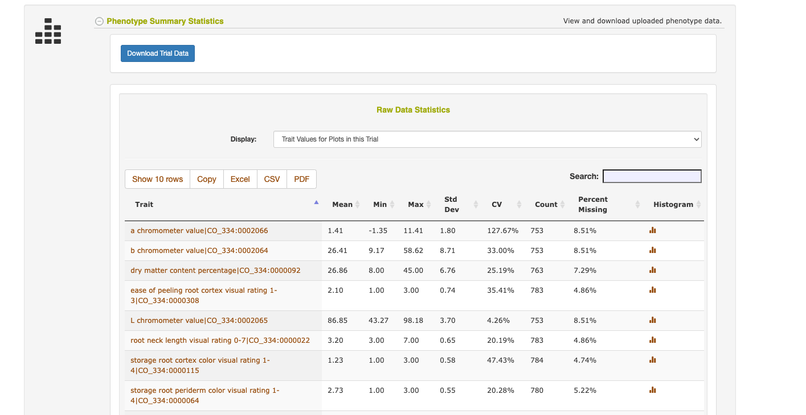
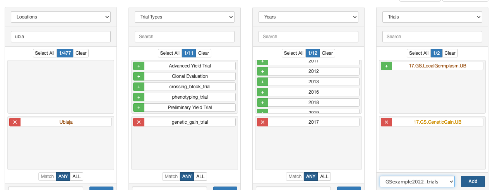
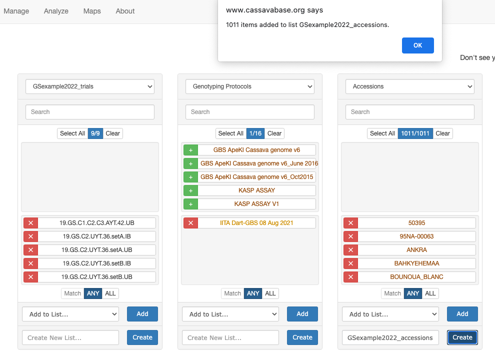
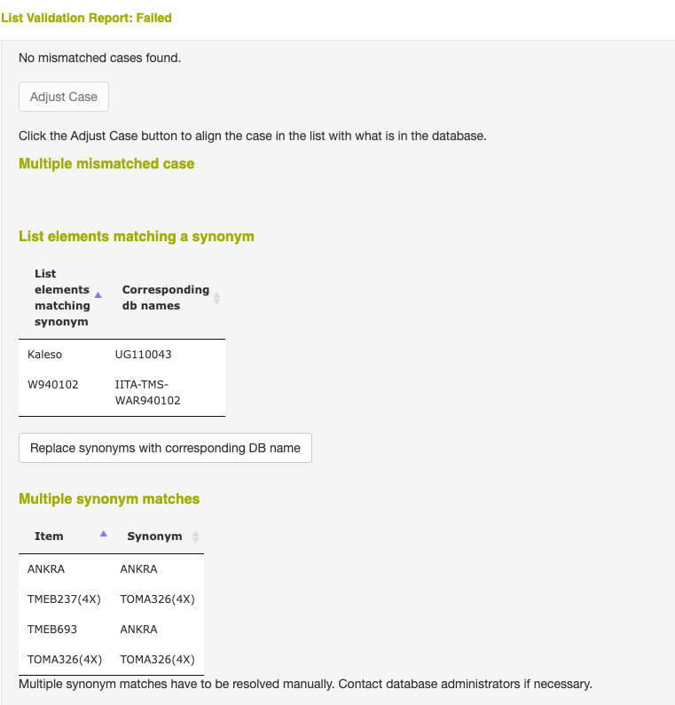

Last updated: 2022-03-24
Checks: 2 0
Knit directory: GSexample2022/
This reproducible R Markdown analysis was created with workflowr (version 1.7.0). The Checks tab describes the reproducibility checks that were applied when the results were created. The Past versions tab lists the development history.
Great! Since the R Markdown file has been committed to the Git repository, you know the exact version of the code that produced these results.
Great! You are using Git for version control. Tracking code development and connecting the code version to the results is critical for reproducibility.
The results in this page were generated with repository version 7de8e11. See the Past versions tab to see a history of the changes made to the R Markdown and HTML files.
Note that you need to be careful to ensure that all relevant files for the analysis have been committed to Git prior to generating the results (you can use wflow_publish or wflow_git_commit). workflowr only checks the R Markdown file, but you know if there are other scripts or data files that it depends on. Below is the status of the Git repository when the results were generated:
Ignored files:
Ignored: .Rproj.user/
Untracked files:
Untracked: .DS_Store
Untracked: Icon
Untracked: analysis/.DS_Store
Untracked: analysis/Icon
Untracked: analysis/images/Icon
Untracked: analysis/images/paste-2F34C15B.png
Untracked: analysis/images/paste-AD7AEEAC.png
Untracked: analysis/images/paste-CB5D91AC.png
Untracked: code/Icon
Untracked: data/BreedBaseGenotypesDownload.vcf
Untracked: data/Icon
Untracked: output/Icon
Untracked: output/phenotypes_cleaned.rds
Note that any generated files, e.g. HTML, png, CSS, etc., are not included in this status report because it is ok for generated content to have uncommitted changes.
These are the previous versions of the repository in which changes were made to the R Markdown (analysis/download.Rmd) and HTML (docs/download.html) files. If you’ve configured a remote Git repository (see ?wflow_git_remote), click on the hyperlinks in the table below to view the files as they were in that past version.
| File | Version | Author | Date | Message |
|---|---|---|---|---|
| Rmd | 7de8e11 | wolfemd | 2022-03-24 | Publish corrected link to DL page |
| html | a2e7492 | wolfemd | 2022-03-20 | Build site. |
| html | 9a87a77 | wolfemd | 2022-03-20 | Build site. |
| Rmd | 3366366 | wolfemd | 2022-03-20 | First commit. Index + Download page. Include images and phenotype/metadata files for workshop purposes only! |
Let’s start with the instructions for downloading training data.
I’ll take screenshots as I go, for posterity.
In the Manual, I created a list already: “IITA_ExampleGStrials_2021Dec04”, it’s public so all participants can access.
I’ll start with that in the Wizard.

In the manual, 1 trial “19geneticgainUB” turned out not to have phenotypes recorded. Let’s remove it, and pick a different “genetic gain” trial.
Save list (without genetic gain trial): “GSexample2022_trials”
Used the wizard to select: “17.GS.GeneticGain.UB”
Double-clicked the trial name in the wizard to go to the trial page: https://www.cassavabase.org/breeders/trial/5337
Checked out the “Phenotype Summary Statistics” page to verify that there is data for this trial.

Added the trial to the “GSexample2022_trials” list, like so:

I also made the trial list public so all workshop participants can use the same.

Create list: “GSexample2022_accessions”
Follow the manual. After clicking “Validate” it takes some time…

As in the manual, I fix it by removing accessions… for your real population, you might not want to do that. Talk to your data managers!
Remove: “Kaleso”, “W940102”, ”ANKRA” and”TOMA326(4X)”
Re-validate the list. List passes validation! Success!
Set list to public so everyone in workshop can use.
Follow manual to download. It will not be quick, do outside of workshop demo!
Move downloaded .vcf file to data/ directory.
Move downloaded pedigree.txt file to data/ directory.